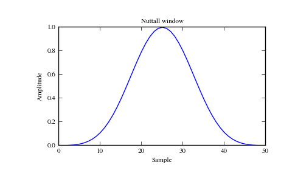
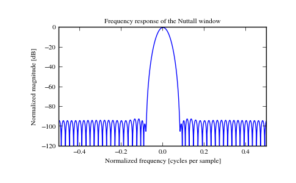

scipy.signal.nuttall¶
- scipy.signal.nuttall(M, sym=True)[source]¶
Return a minimum 4-term Blackman-Harris window according to Nuttall.
Parameters : M : int
Number of points in the output window. If zero or less, an empty array is returned.
sym : bool, optional
When True, generates a symmetric window, for use in filter design. When False, generates a periodic window, for use in spectral analysis.
Returns : w : ndarray
The window, with the maximum value normalized to 1 (though the value 1 does not appear if the number of samples is even and sym is True).
Examples
Plot the window and its frequency response:
>>> from scipy import signal >>> from scipy.fftpack import fft, fftshift >>> import matplotlib.pyplot as plt
>>> window = signal.nuttall(51) >>> plt.plot(window) >>> plt.title("Nuttall window") >>> plt.ylabel("Amplitude") >>> plt.xlabel("Sample")
>>> plt.figure() >>> A = fft(window, 2048) / (len(window)/2.0) >>> freq = np.linspace(-0.5, 0.5, len(A)) >>> response = 20 * np.log10(np.abs(fftshift(A / abs(A).max()))) >>> plt.plot(freq, response) >>> plt.axis([-0.5, 0.5, -120, 0]) >>> plt.title("Frequency response of the Nuttall window") >>> plt.ylabel("Normalized magnitude [dB]") >>> plt.xlabel("Normalized frequency [cycles per sample]")
